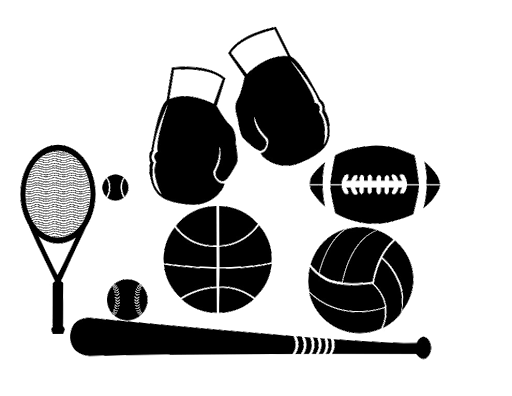
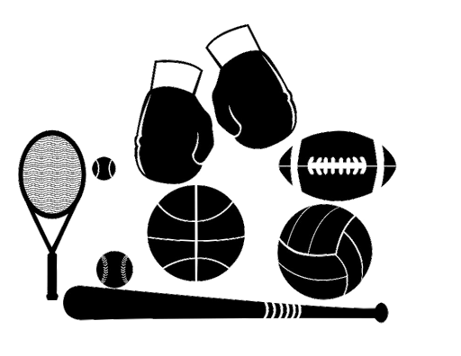
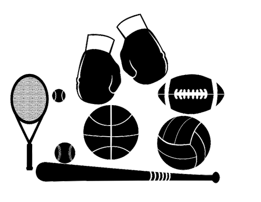
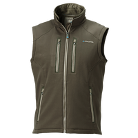
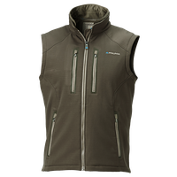
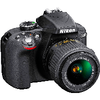
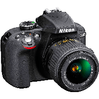

Few images capture the verve, energy, and tension of human life better than sports
Capturing bodies in motion is no easy feat, so Unsplash has curated an only-the-finest
selection of sporting images that cover everything from yoga and dancing to football and baseball.
|

|
Denim is a heavy-weight fabric with very little drape or stretch. Denim is a sturdy
cotton warp-faced twill textile in which the weft passes under two or more
warp threads.
This twill weaving produces the familiar diagonal ribbing of the denim that
distinguishes it from cotton duck.


 


|
Most modern day electronics now use printed circuit boards made of materials such
as FR4, or the cheaper (and less hard-wearing) Synthetic Resin Bonded Paper
(SRBP, also known as Paxoline/Paxolin (trade marks) and FR2) – characterised by
its brown colour.
 



|